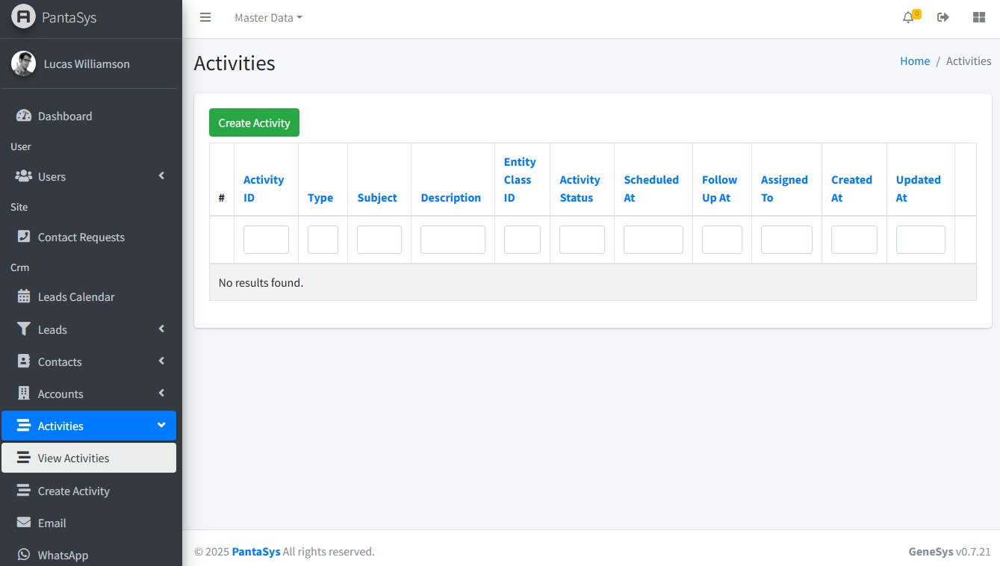
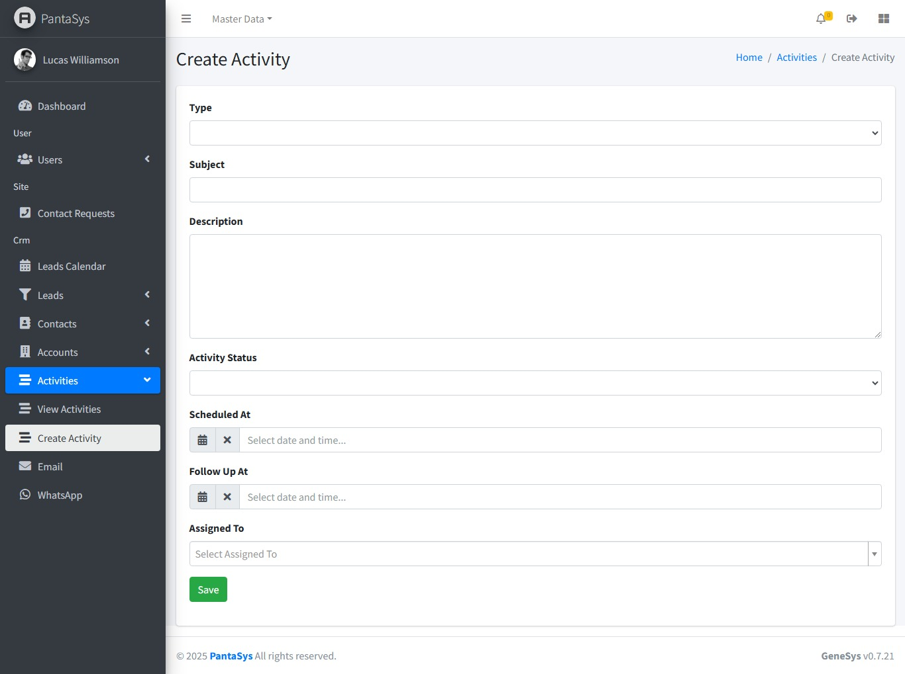

7. Activities
7.2 Viewing all Activities
On the View Activities page, activities are displayed in a table format, providing a comprehensive overview of all existing activities.
{kind=link}
7.3 Create Activity Form
The Create Activity form allows users to add a new activity into the system. Below are the field descriptions along with their expected input values.
{kind=link}
Below are the field descriptions and their expected inputs and functionality.
{kind=link}
7.4 Managing Activities
The PantaSys CRM provides comprehensive functionalities to manage Accounts effectively. The Account function allows users to add new business accounts to the CRM system.
Creating an Activity
To add a new activity:
Navigate to Activities: Click the Activities button to expand a dropdown list.
Create Activity: Click the Create Activity button.
Fill in Details: Complete the fields in the form.
Save: Click Save to add the new activity to the system.
Viewing an Activity
To view details of an existing activity:
Navigate to View Activities: Access the View Activities page.
Activity Table: Activities are displayed in a table format with relevant details.
View Icon: Click the View icon in the Actions column corresponding to the desired activity to see detailed information.
{kind=link}
Updating an Activity
To modify an existing activity:
Navigate to View Activities: Access the View Activities page.
Edit Icon: Locate the activity to be updated and click the Edit icon.
Modify Details: Make the necessary changes in the form.
Save: Click Save to apply the updates.
Deleting an Activity
To remove an activity from the system:
Navigate to View Activities: Access the View Activities page.
Delete Icon: Locate the activity to be deleted and click the Delete icon.
Confirm Deletion: Confirm the deletion when prompted to remove the activity.